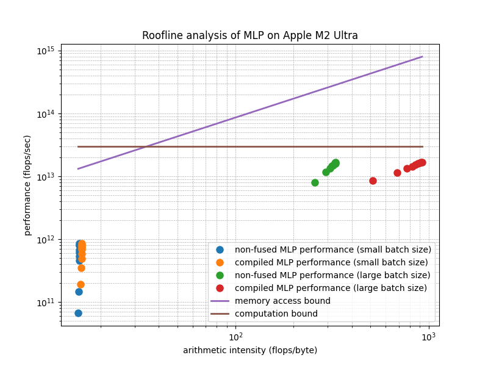

mlx.core.compileYi Wang <yi.wang.2005 在 Google correo electrónico>
In this analysis, we consider an example of a multi-layer perceptron (MLP). The MLP is defined as follows:
def mlp(x: mx.array, M: mx.array, N: mx.array) -> mx.array:
return mlx.nn.gelu(x @ M) @ NLet:
The total number of floating-point operations (flops) required is the sum of the following:
x @ M: \(2 B I H\)
flops.gelu(x @ M): \(12 B
H\) flops, as each of the \(BH\)
elements requires 12 flops according to the GeLU definition.gelu(x @ M) @ N: \(2 B I
H\) flops.Assuming all tensors are in fp16, the total number of
bytes being loaded and saved includes:
x: \(2 B I\)
bytesM: \(2 I H\)
bytesN: \(2 I H\)
bytesx @ M before calling gelu:
\(4 B H\) bytesgelu(x @ M) before multiplying by
N: \(4 B H\) bytesgelu(x @ M) @ N: \(2 B I\) bytesThe arithmetic intensity in the non-fused case is given by:
\[ \frac{4BIH + 12 BH}{4BI + 4IH + 8BH} \]
If mlx.core.compile fuses the operations, avoiding the
saving and loading of intermediate activations, the arithmetic intensity
becomes:
\[ \frac{4BIH + 12 BH}{4BI + 4IH} \]
Below is a visualization showing how fusing the operations changes the performance.

The following Python program computes and plots the Roofline analysis based on the above formulas.
import numpy
import gc
import math
import platform
import subprocess
import time
from typing import List, Tuple
import matplotlib.pyplot as plt
import mlx.core as mx
import mlx.nn
DT = mx.float16
b = 16 # a small batch size
B = 1024 # a large batch size
I = 1024 # input dimension. The intermediate dimension will be I*h for h in range(10)
def mlp_nonfused(x: mx.array, l1: mx.array, l2: mx.array) -> mx.array:
return mlx.nn.gelu(x @ l1) @ l2
mlp_compiled = mx.compile(mlp_nonfused)
def flops(B, I, H) -> int:
return 4 * B * I * H + 12 * B * H
def ai_nonfused(B, I, H) -> float:
return flops(B, I, H) / float(4 * B * I + 4 * I * H + 8 * B * H)
def ai_compiled(B, I, H) -> float:
return flops(B, I, H) / float(4 * B * I + 4 * I * H)
aint_small_batch_nonfused = [ai_nonfused(b, I, I * h) for h in range(1, 10)]
aint_small_batch_compiled = [ai_compiled(b, I, I * h) for h in range(1, 10)]
aint_large_batch_nonfused = [ai_nonfused(B, I, I * h) for h in range(1, 10)]
aint_large_batch_compiled = [ai_compiled(B, I, I * h) for h in range(1, 10)]
def benchmark(fused: bool, B, I, H, R=10) -> Tuple[float, float]:
x = mx.random.uniform(-1.0, 1.0, [B, I], dtype=DT)
M = mx.random.uniform(-1.0, 1.0, [I, H], dtype=DT)
N = mx.random.uniform(-1.0, 1.0, [H, I], dtype=DT)
mx.eval(x)
mx.eval(M)
mx.eval(N)
start_time = time.perf_counter()
for _ in range(R):
y = (mlp_compiled if fused else mlp_nonfused)(x, M, N)
mx.eval(y)
duration = (time.perf_counter() - start_time) / R
ops = flops(B, I, H)
print(f"perf = {ops} / {duration}")
return ops / duration
perf_small_batch_nonfused = [benchmark(False, b, I, I * h) for h in range(1, 10)]
perf_small_batch_compiled = [benchmark(True, b, I, I * h) for h in range(1, 10)]
perf_large_batch_nonfused = [benchmark(False, B, I, I * h) for h in range(1, 10)]
perf_large_batch_compiled = [benchmark(True, B, I, I * h) for h in range(1, 10)]
def get_chip_model():
# Use 'sysctl' to get information about the Apple Silicon chip
try:
output = (
subprocess.check_output(["sysctl", "-n", "machdep.cpu.brand_string"]).strip().decode()
)
return output
except subprocess.CalledProcessError as e:
return f"Error retrieving chip model: {e}"
chip = get_chip_model()
bandwidth = {
"Apple M1 Max": 2**30 * 400, # https://en.wikipedia.org/wiki/Apple_M1#Memory
"Apple M2 Ultra": 2**30
* 800, # https://www.apple.com/newsroom/2023/06/apple-introduces-m2-ultra
}[chip]
roof = {
"Apple M1 Max": 2**40 * 10.4, # https://en.wikipedia.org/wiki/Apple_M1#GPU
"Apple M2 Ultra": 2**40 * 27.2, # https://en.wikipedia.org/wiki/Apple_M2#GPU
}[chip]
aint = (
aint_small_batch_nonfused
+ aint_small_batch_compiled
+ aint_large_batch_nonfused
+ aint_large_batch_compiled
)
diag = [bandwidth * ai for ai in aint]
roof = [roof for _ in aint]
plt.figure(figsize=(8, 6))
plt.loglog(
aint_small_batch_nonfused,
perf_small_batch_nonfused,
"o",
markersize=8,
label="non-fused MLP performance (small batch size)",
)
plt.loglog(
aint_small_batch_compiled,
perf_small_batch_compiled,
"o",
markersize=8,
label="compiled MLP performance (small batch size)",
)
plt.loglog(
aint_large_batch_nonfused,
perf_large_batch_nonfused,
"o",
markersize=8,
label="non-fused MLP performance (large batch size)",
)
plt.loglog(
aint_large_batch_compiled,
perf_large_batch_compiled,
"o",
markersize=8,
label="compiled MLP performance (large batch size)",
)
plt.loglog(aint, diag, "-", linewidth=2, label="memory access bound")
plt.loglog(aint, roof, "-", linewidth=2, label="computation bound")
plt.xlabel("arithmetic intensity (flops/byte)")
plt.ylabel("performance (flops/sec)")
plt.title(f"Roofline analysis of MLP on {chip}")
plt.legend()
plt.grid(True, which="both", ls="--", linewidth=0.5)
plt.show()